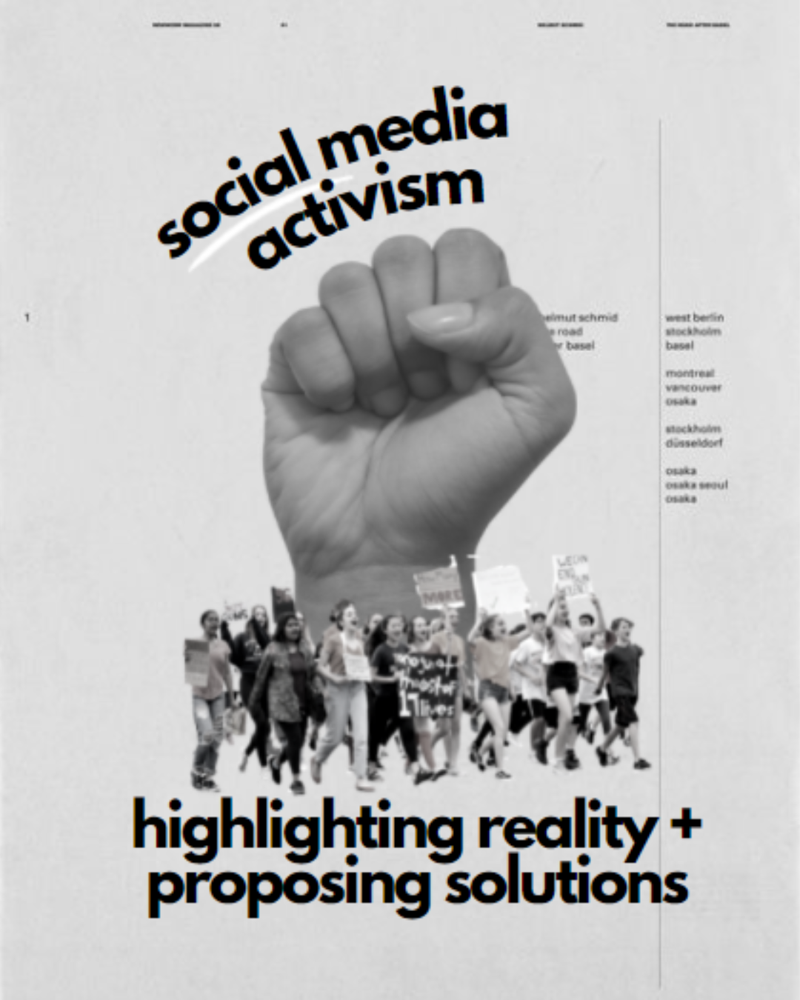

Our Projects

Social Media Campaigns
Utilizing social media platforms to raise awareness about educational issues and promote our initiatives
Darurat Banjir
Engaging volunteers to support flood relief efforts and assist affected schools communities
StuCo
Student Council (StuCo) initiatives aimed at fostering leadership and collaboration among students

Sekolah Kenegaraan
Providing civic education and promoting national identity among students
Video Series
Creating engaging video content to highlight educational issues and promote our initiatives
Direktori Pendidikan
Creating a comprehensive directory of educational resources and support services for students